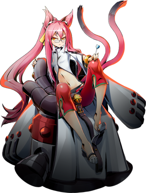

◈ SECTOR SEVEN · ZONER
Kokonoe
BlazBlue: Entropy Effect — Персонаж
90
Атака
40
Защита
55
Скорость
60
HP
★★☆
Сложность
Зональный
Тип боя
Kokonoe — гениальный учёный из Sector Seven, контролирующая каждый дюйм экрана с помощью своих многочисленных устройств. Лазеры, ракеты, элементальные атаки и взрывы — нигде не спрятаться от машин Kokonoe. Если вам нравится заполнять экран эффектами и подавлять врагов высоким уроном, Kokonoe — ваш выбор.[reference:0]
Ace Hunter
Components
Banishing Rays

01
Досье персонажа
Имя
Kokonoe (ココノエ)
Организация
Sector Seven
Оружие
Многочисленные устройства (Armaments)
База HP / Атака
1350 / 210 (30 потенциалов, +600%)[reference:1]
Роль
Zoner / Контроль зон
Особенность
Компоненты, Killstreak-бафф, телепортация
Боевые характеристики
ATK90
DEF40
SPD55
HP60
RANGE95
SKILL85
Талант (Talent)
Ace Hunter
При killstreak 10 или выше урон навыков увеличивается на +90%. Счётчик killstreak отображается в левом нижнем углу с иконкой черепа. Killstreak определяется количеством врагов, побеждённых без получения урона.[reference:2]
При killstreak 10 или выше урон навыков увеличивается на +90%. Счётчик killstreak отображается в левом нижнем углу с иконкой черепа. Killstreak определяется количеством врагов, побеждённых без получения урона.[reference:2]
02
Навыки и приёмы
Armament No.8EE "Meteor Carpet Storm vE.24"
Legacy Skill 1
Запускает 5 самонаводящихся ракет. Количество ракет увеличивается с каждым уровнем.
Ракеты появляются над прототипом и нацеливаются на ближайших врагов.[reference:3]
Armament No.6β "Planar Haze v1.00"
Legacy Skill 2
Открывает портал для телепортации прототипа в удерживаемом направлении.
Расстояние телепортации увеличивается с каждым уровнем. Даёт дополнительный Dash
с большим количеством кадров неуязвимости.[reference:4]
Components (Компоненты)
Уникальная механика
После получения Universal Enhancement большинство действий Kokonoe оставляют
сломанные устройства (Components) на земле. Их можно детонировать вручную (Down + Attack)
или использовать с Banishing Rays для создания дополнительных лазеров.[reference:5]
[Ground] Attack — 3-hit Combo
Базовая атака
Комбо из 3 ударов: выстрел водяными каплями, короткая волна искр, затем залп ракет.
Удержание Attack продолжает стрельбу водяными снарядами. С потенциалами: ракеты,
ледяные шипы с замедлением, Super Armor.[reference:6]
[Airborne] Attack
Воздушная атака
Kokonoe вращается в воздухе, извергая огонь по кругу. С потенциалами: атака льдом
(замедление), "Splashes" с увеличенным уроном, разрушение Super Armor, тройной прыжок.[reference:7]
Unique Dash / "Planar Haze v3.09"
Уникальный Dash
Kokonoe делает быстрый рывок и едет на скутере, пока удерживается Dash.
Сначала имеет очень мало Dodge Frames. С "Planar Haze v3.09" Dash превращается
в телепорт на короткое расстояние с полной неуязвимостью.[reference:8]
"Furious Decimator Avalanche v2.19"
[Ground] / [Airborne] Skill
[Ground] Skill: запускает несколько ракет вперёд (MP:100). [Airborne] Skill: ракеты летят к земле
и летят прямо после приземления (MP:100). С потенциалами: двойное количество ракет,
разрушение Super Armor, оставление клона.[reference:9]
"Broken Bunker Assault v3.13"
[Ground] Up + Attack
Бежит вперёд и наносит апперкот. Повторное нажатие Attack — прямой удар.
Оба удара выпускают ракету, которая запускает противника. С потенциалами:
лазерный луч, "Splashes", захват врагов при удержании.[reference:10]
"Banishing Rays v7.10"
[Ground] Down + Skill
Устанавливает Banishing Ray — устройство, периодически стреляющее лазерами и
разряжающее электричество рядом (MP:35). При использовании рядом с Components
дополнительные лазеры появляются из них.[reference:11]
"Heaven's Judgement vE.83"
Up + Skill
Призывает гигантский лазерный столб, медленно движущийся вперёд (MP:100).
С потенциалами: удвоенная длительность, увеличенная толщина и урон,
ускоренное движение и отслеживание врагов.[reference:12]
"Meteor Carpet Storm vE.24" (SP)
[Ground] Hold Action
Призывает множество ракет, падающих с неба в течение нескольких секунд (SP:100).
SP зарабатывается тратой MP. С потенциалами: удвоение ракет, отбрасывание и
оглушение врагов, увеличенные взрывы.[reference:13]
Universal Enhancement: Components
Универсальное улучшение
Устройства Kokonoe оставляют Components. Три компонента в форме треугольника
создают энергетические лучи между ними, наносящие постоянный урон врагам.
С улучшениями: больше компонентов, лучи между 4 компонентами, огненный ковёр при детонации.[reference:14]
03
Основные механики
Components — основа урона Kokonoe
После получения Universal Enhancement большинство действий Kokonoe оставляют Components —
сломанные устройства, лежащие на земле. Их можно детонировать вручную (Down + Attack) или
использовать как усилители для Banishing Rays. При размещении трёх Components в форме
треугольника между ними появляются энергетические лучи, наносящие постоянный урон врагам.
С дополнительными улучшениями лучи могут соединять 4 компонента и даже любые фигуры.
Подготовка нескольких Components перед боем с боссом — один из самых простых способов
нанести колоссальный урон за первые секунды боя.[reference:15]
Ace Hunter
Талант Kokonoe даёт +90% к урону навыков при killstreak 10+.
Счётчик сбрасывается при получении урона. Убейте 10 врагов без урона перед боссом,
чтобы сохранить бафф на всю битву.[reference:16]
Телепортация
С "Planar Haze v3.09" Dash Kokonoe превращается в телепорт с полной неуязвимостью.
Однако после телепорта есть задержка перед возможностью использовать другие действия.
Освоение этой механики критически важно для выживания.[reference:17]
Зональный контроль
Kokonoe контролирует каждый дюйм экрана: ракеты, лазеры, молнии, взрывы.
С правильными потенциалами она превращается в армию одного человека,
способную расправиться с боссами ещё до того, как они нанесут 10 атак.[reference:18]
Синергия Components
Components взаимодействуют с Banishing Rays (дополнительные лазеры) и создают
энергетические лучи между собой. Правильная расстановка компонентов экспоненциально
увеличивает урон Kokonoe.[reference:19]
04
Советы по игре
- 🚀Поддерживай killstreak 10+ перед боссом. +90% к урону навыков — огромный бафф. Убей 10 слабых врагов без получения урона перед ареной босса.
- 🚀Расставляй Components перед боем. Несколько компонентов + Banishing Rays = лавина лазеров. Особенно эффективно против больших боссов.
- 🚀Освой телепортацию. "Planar Haze v3.09" даёт неуязвимость, но имеет задержку. Тренируйся отменять телепорт Dash Attack или другим Dash.
- 🚀Universal Enhancement: Components обязателен. Это открывает всю механику Components и энергетических лучей, без которых урон Kokonoe сильно падает.
- 🚀Используй "Furious Decimator Avalanche" для AoE. Ракеты покрывают большую площадь и отлично подходят для зачистки волн врагов.
- 🚀"Heaven's Judgement" против неподвижных боссов. Медленный лазерный столб наносит колоссальный урон, если босс стоит на месте или оглушён.
- 🚀Детонируй Components вручную (Down + Attack). Если враги не заходят в зону лучей, взорви компоненты для мгновенного урона и огненного ковра.